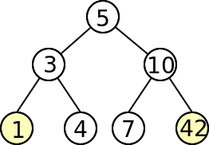

Use como base as classes BSTree<T> e BSTNode<T>.
Acrescente à classe dada dois novos métodos:
É garantido que a árvore binária é de pesquisa e que não é vazia (tem pelo menos um valor armazenado.
A figura seguinte ilustra uma árvore binária de pesquisa com valor mínimo X e valor máximo Y.

Deverá submeter apenas a classe BSTree<T>, acrescentando o método minValue e maxValue como pedido (e sem apagar ou modificar nenhum dos outros métodos dados como base). Pode assumir que terá acesso no Mooshak à classe BSTNode<T> (não a pode mudar) e se precisar pode criar outros métodos auxiliares. O Mooshak irá criar várias instâncias da sua classe e irá fazer uma série de testes ao método por si implementado.
O primeiro exemplo corresponde à árvore da figura do enunciado.
| Valores da árvore t (pela ordem de inserção) |
t.minValue() | t.maxValue() |
|---|---|---|
| 5 3 10 1 4 7 42 | 1 | 42 |
| 14 4 18 3 9 16 20 7 15 17 5 | 3 | 20 |
| "ana" "pedro" "duarte" "afonso" "carlos" "luis" | "afonso" | "pedro" |
Conteúdo de Fernando Silva (DCC/FCUP), migrado de dcc.fc.up.pt/~fds/aulas/EDados/2526/praticas/problems/prob208.html.